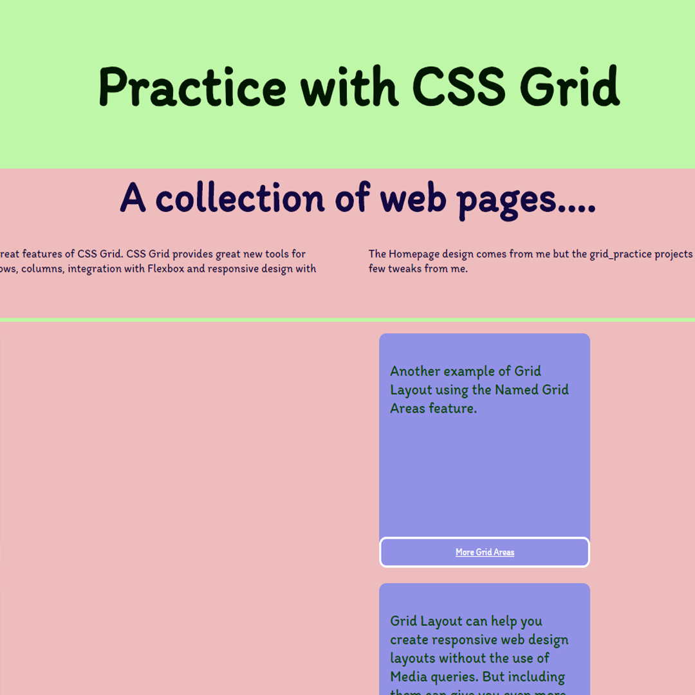

Grid makes it easier to layout HTML elements in your website.
| CH | MZ | IE | OP | ED | SA |
|---|---|---|---|---|---|
| 91 | 89 | 11 * | 77 | 91 | 14.1 |
The homepage for this website is divided into 3 sections of elements, each defined as a CSS Grid. The first 2 use grid-template-columns to lay out "grid item" elements.
The third uses grid areas to assign a more custom layout to child elements of a grid area.
Grid is turned off on mobile screens where a 1 column layout is preferred where possible.
It started out as a simple re-design of this project first made in 2017 and the ideas kind of snowballed from there
